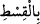
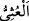
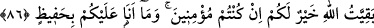

85. “Ey kavmim, ölçüyü tartıyı adâletle yapın, insanların eşyasını eksik vermeyin
ve yeryüzünde bozguncular olarak dolaşmayın.”
“Ey kavmim, ölçüyü ve tartıyı adâletle yapın” Hakkın îfâsı, tam ve noksansız bir
şekilde verilmesi demektir. Yâni içinizde mesuliyetten kurtulduğunuza dâir bir yakin
hâsıl olacak şekilde eksiksiz ve noksansız bir biçimde vermeye gayret edin.
“
(adâletle)” kelimesi, ‘adâlet ve eşitliğe riayet ederek’ demektir. Çünkü ölçü ve
tartıda fazla vermek her ne kadar bir fazîlet ve kerem göstergesi ve mendûb bir şey ise
de tıpkı noksan vermede olduğu gibi ölçü aletinin doğruyu gösterip göstermemesi
açısından sakıncalıdır. Fazla vermek, ölçü âletini kendisi için bir şey tartmakta
kullandığında; eksik vermek ise başkası için bir şey tartmakta kullandığında
düşünülebilir. el-İrşâd’da böyle geçmektedir.
Allah Teâlâ “tam verme”nin zıddı olan eksik vermeyi yasakladıktan sonra tam ve
adâletli vermeyi açıkça zikretmektedir. Çünkü, önce ‘ölçü ve tartıda’ noksan
yapılmasından nehyedildikten sonra bunların eksiklik olmaksızın yapılması
emredilmiştir. Bunun mânâsı, ölçü ve tartıda noksanlık yapılmamasıdır. Netice olarak
ölçü ve tartının tam olarak yapılması emri, ölçü ve tartı âletlerinin düzeltilip normal
hâle getirilmesinden sonradır. Bu bakımdan âyette herhangi bir tekrar yoktur. Nitekim
Müfti Sa‘dî’nin Hâşiye’sinde böyle denilmektedir.
“İnsanların eşyâsını” bu eşyâ ne olursa olsun, ister tartılan ister ölçülen, ister
değerli, ister değersiz olsun “eksik vermeyin” Şuayb (a.s.)’ın kavmi, simsarların
yaptığı gibi satılan her şeyden bir miktar komisyon alıp müşterilere o malın değerini
azaltarak verirlerdi.
“Ve yeryüzünde bozguncular olarak dolaşmayın.” “
” bozgunculuk etmekten
daha şiddetli bir fiildir. Yâni mütemadiyen bozgunculuk etmeyin. Çünkü bu kavim,
devamlı olarak bozgunculuk ederdi. İşte bu kendilerine yasaklanmış olmaktadır.
Başkalarının haklarını eksik vermek de fesad sayılır. Altın ve gümüş paraların
kenarlarından eksilterek ağırlığını düşürmek ve bazı şartlardan istifade ile bu noksan
akçeleri piyasaya sürmek gibi hareketler de bozgunculuk fiillerindendir.
86. “Eğer mü’min iseniz Allah’ın bıraktığı (kâr), sizin için daha hayırlıdır. Fakat
ben sizin üzerinizde bir bekçi değilim.”
“Eğer mü’min iseniz” inanmış olmak şartıyla size söylediğim şeyler konusunda beni
tasdik ediyorsanız “Allah’ın bıraktığı” yani haramı terk ettikten sonra Allah’ın size
bıraktığı helal kazanç “sizin için” eksik verip ölçüsüz davranarak biriktirdiklerinizden
“daha hayırlıdır.” Çünkü siz ne kadar bunlarda hayır bulunduğunu düşünseniz bile
Cenab-ı Hakk’ın buyurduğu gibi bunlar yok olup gidecek olan hattâ sırf şer olan